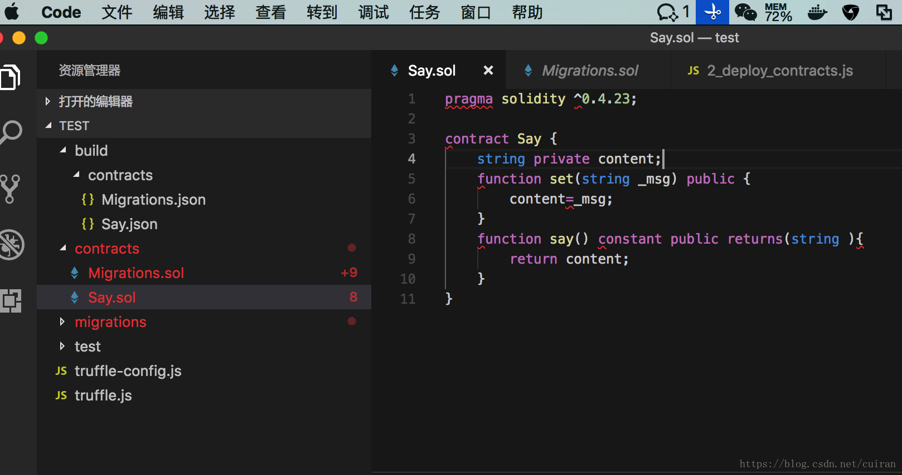
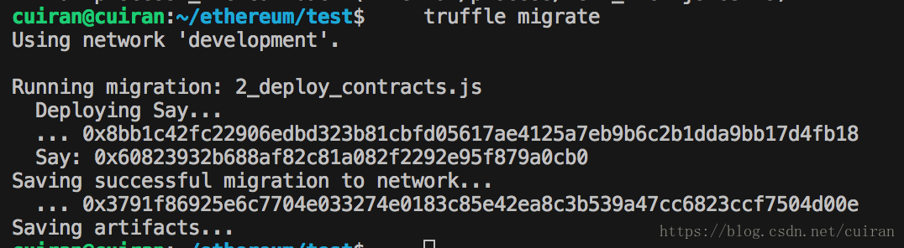

2. Truffle安装部署和测试¶
2.1. truffle环境安装¶
针对truffle 环境安装可以参考此前介绍
$ npm install -g truffle
2.3. 新建合约文件¶
然后可以用vscode打开test目录 新建一个合约

pragma solidity ^0.4.23;
contract Say {
string private content;
function set(string _msg) public {
content=_msg;
}
function say() constant public returns(string ){
return content;
}
}
2.4. 增加合约部署文件¶
在目录migrations新建2_deploy_contracts.js
var Say = artifacts.require("./Say.sol");
module.exports = function(deployer) {
deployer.deploy(Say);
};
2.6. 部署合约到区块链上¶
修改目录下的文件truffle.js 如下(host和port要根据自己的配置来定)
module.exports = {
// See <http://truffleframework.com/docs/advanced/configuration>
// to customize your Truffle configuration!
networks:{
development:{
host:"localhost",
port:8545,
network_id:"*",
gas:3000000
}
}
};
在部署之前先解锁账号 ，并启动挖矿
personal.unlockAccount(user1)
miner.start()
然后执行truffle migrate 部署合约

这样合约就部署成功了，但是怎么调用呢？下面会讲到
2.7. 合约调用¶
配置参数参数位于truffle中的build/contracts目录下的Say.json文件中 可以打开文件查找到 配置abi参数
var abi=[
{
"constant": false,
"inputs": [
{
"name": "_msg",
"type": "string"
}
],
"name": "set",
"outputs": [],
"payable": false,
"stateMutability": "nonpayable",
"type": "function"
},
{
"constant": true,
"inputs": [],
"name": "say",
"outputs": [
{
"name": "",
"type": "string"
}
],
"payable": false,
"stateMutability": "view",
"type": "function"
}
]
配置addr参数
var addr="0x60823932b688af82c81a082f2292e95f879a0cb0"
然后进行调用即可
var adoption = web3.eth.contract(abi).at(addr)
console.log("获取account[0]"+web3.eth.accounts[0]);
adoption.set.sendTransaction("I'm here!!!", {from:web3.eth.accounts[0]})
var str= adoption.say();
console.log("获取成功"+str);
打印的日志：
获取成功I'm here!!!
到此调用智能合约就ok了！！！